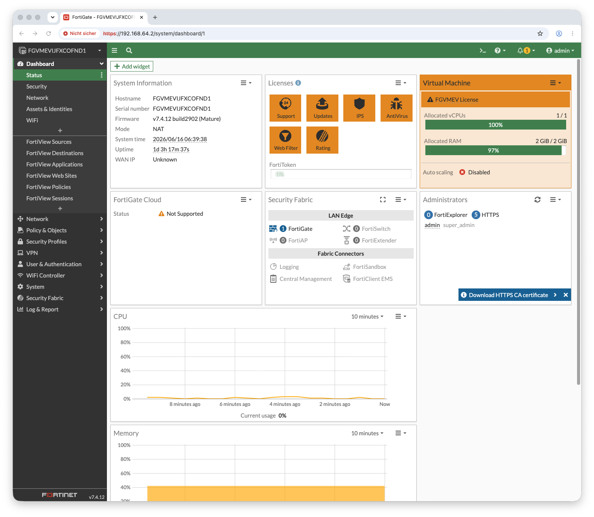

Das Ziel
Für meine NSE4-Vorbereitung wollte ich eine echte FortiGate-Firewall als Heimlabor — nicht in der Cloud, sondern lokal auf dem Mac mini M4. Die naheliegende Annahme: FortiGate-VM gibt es nur als x86-64-Image, also bleibt nur langsame Emulation auf dem ARM-Mac. Diese Annahme stellte sich als veraltet heraus.
Die Überraschung: Fortinet veröffentlicht inzwischen ein natives
ARM64-KVM-Image (FGT_ARM64_KVM-v7.4.12...out.kvm.zip).
Auf dem M4 läuft es über Apples Hypervisor.framework mit voller Geschwindigkeit — keine x86-Emulation,
keine Performance-Strafe. Im Download-Center muss man dafür Plattform KVM wählen und die
Variante „New deployment … ARM64" nehmen (nicht die „Upgrade"-Datei und nicht FortiFirewall).
Die Topologie
Eine klassische Edge-Firewall: ein WAN-/Management-Interface mit Internetzugang über die Mac-NAT und ein internes LAN-Interface, hinter dem später Client-VMs hängen.
Der Weg — chronologisch
Aus dem Fortinet-Support-Portal das native ARM64-KVM-Image gezogen. Das ZIP enthält die Boot-Disk fortios.qcow2 (~105 MB).
Ein per Skript erstelltes .utm-Bundle wird von UTM nicht geladen („Failed to create object"). Lösung: VM einmal über den Wizard anlegen.
Hardware-Beschleunigung (hvf), zweite NIC und serielle Konsole direkt in der config.plist nachgerüstet.
FortiOS gibt auf ARM64-KVM nichts auf dem Grafik-Display aus — die Konsole liegt seriell. Zugriff über eine TCP-Serielle statt utmctl attach.
Interfaces, DHCP-Server und die LAN→WAN-Policy skriptgesteuert über die serielle Konsole gesetzt.
Kostenlose Evaluation-Lizenz aktiviert (GUI war ohne Lizenz gesperrt) und die VM auf 1 vCPU getrimmt, um in den Lizenz-Limits zu bleiben.
Stolperstein 1 — UTM lädt keine handgebauten Bundles
Mein erster Reflex war, das .utm-Bundle (im Grunde ein Ordner mit einer
config.plist und der Disk) komplett per Skript zu erzeugen. UTM ignorierte es —
beim Start im Terminal verriet die einzige Fehlerzeile den Grund:
UTM scannt zwar seinen Documents-Ordner, kann eine extern erzeugte VM aber nicht registrieren (vermutlich
fehlende Security-Scoped-Bookmarks). Die Lösung: die VM einmal über den UTM-Wizard anlegen
(Emulate → ARM64 → „Andere") und dabei die bereits heruntergeladene fortios.qcow2
als „Drive Image" importieren. Danach lässt sich die von UTM erzeugte, gültige config.plist
gefahrlos weiterbearbeiten.
Stolperstein 2 — config.plist anpassen (und der Reload-Trick)
Der Wizard erstellt die VM bewusst konservativ: ohne Hardware-Beschleunigung und mit nur einem Interface.
Die nötigen Änderungen lassen sich sauber mit Apples PlistBuddy nachziehen —
native Beschleunigung (hvf + CPU=host), eine zweite NIC für das LAN und eine
serielle Schnittstelle.
Die Falle: UTM hält die VM-Konfiguration im Speicher. Editiert man die Datei, während
UTM läuft, startet utmctl start trotzdem mit der
alten Config — meine CPU-Begrenzung verpuffte zunächst (QEMU bekam weiter -smp 4).
Nach jeder config.plist-Änderung muss die UTM-App
neu gestartet werden: pkill -9 -f UTM.app && open -a UTM.
Noch ein Detail zur seriellen Schnittstelle: Der „Built-In Terminal"-Modus heißt in der Plist nicht etwa
„Builtin", sondern Terminal — falsche Enum-Werte führen dazu, dass UTM die VM
als „nicht verfügbar" markiert. Solche Schemata habe ich am verlässlichsten ermittelt, indem ich das Gerät
einmal über die UTM-GUI hinzufügte und die resultierende Plist auslas.
Stolperstein 3 — die serielle Konsole über TCP
Nach dem Start zeigte das VM-Fenster nur „Display output is not active". FortiOS spricht auf
ARM64-KVM ausschließlich über die serielle Schnittstelle (PL011-UART), nicht über das Grafik-Display.
Naheliegend wäre utmctl attach gewesen — das ist in UTM 4.7.5 aber noch nicht
implementiert (attach command is not implemented yet!).
Die saubere Alternative: die serielle Schnittstelle als TCP-Server konfigurieren. Dann lauscht
UTM auf 127.0.0.1:4555 und man verbindet sich vom Terminal aus — interaktiv mit
nc oder skriptgesteuert mit expect.
Praktischer Nebeneffekt: Mit einer TCP-Seriellen lässt sich die gesamte
FortiGate-Grundkonfiguration automatisieren — ideal für reproduzierbare Labs. Erster Befehl
nach dem Login sollte immer config system console / set output standard
sein, sonst stoppt FortiOS lange Ausgaben mit --More--.
Die FortiGate-Grundkonfiguration
Über dieselbe serielle Verbindung wird die Edge-Firewall aufgesetzt: WAN per DHCP (port1), statisches LAN mit eigenem DHCP-Server (port2) und eine Security-Policy, die das LAN per Source-NAT ins Internet lässt.
Verifikation
Routing-Tabelle, Internet-Erreichbarkeit von der FortiGate und GUI-Zugriff vom Mac:

Abb. 1 — FortiGate-VM 7.4.12 Dashboard: FGVMEVIJFXCOFND1, Evaluation License, 1 vCPU / 2 GB RAM — läuft nativ (hvf) in UTM auf dem Mac mini M4
Stolperstein 4 — ohne Lizenz keine GUI
Bis hierher lief alles über die CLI. Beim Versuch, die Web-GUI zu nutzen, kam die nächste Überraschung:
Eine FortiGate-VM mit License Status: Invalid sperrt in FortiOS 7.4 die komplette
Oberfläche auf die Lizenz-Upload-Seite. Kein Dashboard, keine Menüs — die CLI funktioniert weiter, die GUI nicht.
| OPTION | KOSTEN | EIGNUNG FÜRS LAB |
|---|---|---|
| Full license (.lic) | kostenpflichtig | nein |
| FortiFlex Token | Programm nötig | meist Enterprise |
| Evaluation license | kostenlos | ja (mit Limits) |
Die kostenlose Evaluation-Lizenz wird im FortiCare-Konto aktiviert, ist aber einmalig pro Konto und bringt harte Limits mit: 1 vCPU, 2 GB RAM, max. 3 Interfaces / 3 Policies / 3 Routen. Für ein Lernlabor reicht das — man sollte sich der Grenzen nur bewusst sein.
Wichtig für die CPU-Begrenzung: Erst nach Reduktion auf 1 vCPU (passend zum Lizenz-Limit)
und einem UTM-App-Neustart verschwand die Warnung „exceeding allowed 1 CPUs". Der Login-Banner meldete
anschließend nur noch ein freundliches Welcome! und der Status sprang auf
License Status: Valid.
Die wichtigsten Erkenntnisse
Fortinets ARM64-KVM-Image läuft auf dem M4 über Apple hvf mit voller Geschwindigkeit — die alte „nur x86, also lahm"-Annahme stimmt nicht mehr.
Handgebaute Bundles lädt UTM nicht. Einmal über den Wizard anlegen, danach die config.plist gezielt nachbearbeiten — und nach jeder Änderung die App neu starten.
FortiOS-Konsole liegt seriell, nicht am Display. Da utmctl attach fehlt, ist eine TCP-Serielle der Schlüssel — und ermöglicht zugleich die komplette Automatisierung per expect.
Eine unlizenzierte FortiOS 7.4 sperrt die Web-Oberfläche komplett. Die kostenlose Evaluation-Lizenz schaltet sie frei — innerhalb fester 1-CPU/3-Policy-Grenzen.
Ergebnis
Eine voll funktionsfähige FortiGate-VM 7.4.12, nativ auf Apple Silicon, mit Internetzugang, eigenem LAN samt DHCP, einer NAT-Policy und freigeschalteter GUI — die Basis für NSE4-Übungen zu Policies, Routing, VPN und Security-Profilen. Der nächste Schritt ist eine Client-VM hinter port2 (über QEMU-Socket-Networking als echtes, isoliertes L2-Segment), damit Datenverkehr tatsächlich durch die Firewall inspiziert wird.
Quellcode & vollständige Anleitung auf GitHub: Konfiguration, Skripte und alle Stolpersteine sind dokumentiert und versioniert. → fortigate-vm-lab-apple-silicon